library(Seurat)
library(Matrix)
library(ggplot2)
library(dplyr)
library(tibble)
library(SingleCellExperiment)
library(scuttle)
library(patchwork)
library(data.table)
library(clusterProfiler)
library(org.Hs.eg.db)
library(stringr)
library(tidyverse)
library(ggpubr)
library(RColorBrewer)
library(patchwork)
library(psych)
library(corrplot)
library(DESeq2)
library(ggrepel)
library(fgsea) Integrating analysis of scRNA-seq and bulk RNA-seq data
This test aims to infer the cell type proportion of bulk RNA-seq samples based on real scRNA-seq data from the same tissue which provides us more accurate information of the cell composition than traditional way by using estimate or CIBERSORT.
datasets used in this test
scRNA-seq
- source: GSE149614
- original samples: single-cell transcriptomes for 10 HCC patients from four relevant sites: primary tumor, portal vein tumor thrombus (PVTT), metastatic lymph node and non-tumor liver
- filtered samples: cells from primary tumor
bulk RNA-seq
- source: TCGA-LIHC cohort
- samples: 377 LIHC samples and 59 control samples
Those steps are included in this run:
- scRNA-seq data quality control and preprocessing
- scRNA-seq data normalization and cell clustering
- scRNA-seq data cell annotation
- bulk RNA-seq data clean (gene symbol conversion, etc)
- cell proportion comparison between tumor and control samples
- bulk RNA-seq DEG analysis
- GSEA analysis
scRNA-seq data processing
setwd("/Users/linyang/Documents/sc-bulk_RNA-seq")
raw_count_mat <-
read.table("GSE149614_HCC.scRNAseq.S71915.count.txt.gz",
row.names = 1,stringsAsFactors = F)
raw_meta_mat <- read.table("GSE149614_HCC.metadata.updated.txt.gz",
stringsAsFactors = F,
header=T)
row.names(raw_meta_mat) <- raw_meta_mat$Cell
raw_count_mat <- as.matrix(raw_count_mat)
counts <- Matrix(raw_count_mat, sparse = TRUE)
seurat_obj <- CreateSeuratObject(
counts = counts,
meta.data = raw_meta_mat,
project = "scRNA_project",
min.cells = 3,
min.features = 200
)Warning: Feature names cannot have underscores ('_'), replacing with dashes
('-')sc_data <- subset(seurat_obj,site=="Tumor") ## only to keep cells from primary tumor
sc_data[["percent.mt"]] <- PercentageFeatureSet(sc_data, pattern = "^MT-") # filter on mitochondrial RNA expression
sc_data[["percent.ribo"]] <- PercentageFeatureSet(sc_data, pattern = "^RP[SL]") # filter on ribosomal RNA expression
sc_dataAn object of class Seurat
25479 features across 34414 samples within 1 assay
Active assay: RNA (25479 features, 0 variable features)
1 layer present: counts# check on the detected mRNA counts distribution
sc_data@meta.data %>%
ggplot(aes(x=nFeature_RNA))+
geom_histogram(binwidth=20)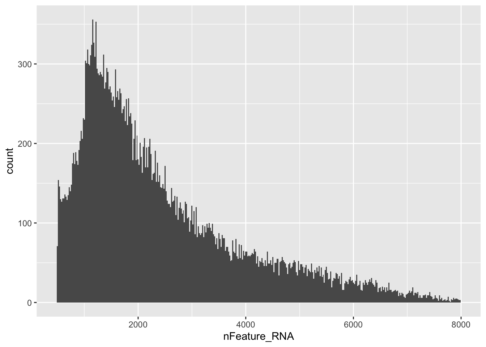
# check on the detected read counts distribution
sc_data@meta.data %>%
ggplot(aes(x=nCount_RNA))+
geom_histogram(binwidth=20)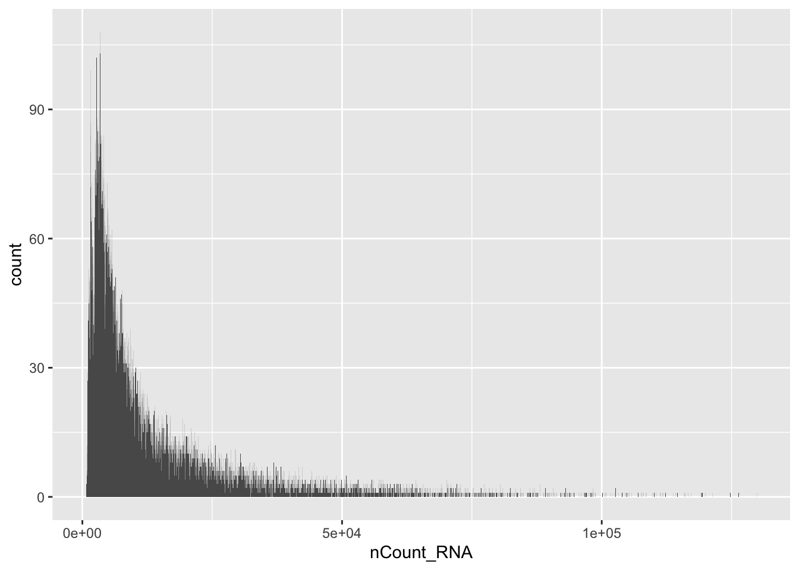
sc_data[["log10GenesPerUMI"]] <- log10(sc_data$nFeature_RNA) / log10(sc_data$nCount_RNA)
qc_features <- c("nFeature_RNA", "nCount_RNA", "percent.mt",
"percent.ribo", "log10GenesPerUMI")
pre_filter_violin <- VlnPlot(
sc_data,
features = qc_features,
pt.size = 0, # hide points for large datasets
ncol = 5
) & theme(axis.title.x = element_blank())Warning: Default search for "data" layer in "RNA" assay yielded no results;
utilizing "counts" layer instead.print(pre_filter_violin)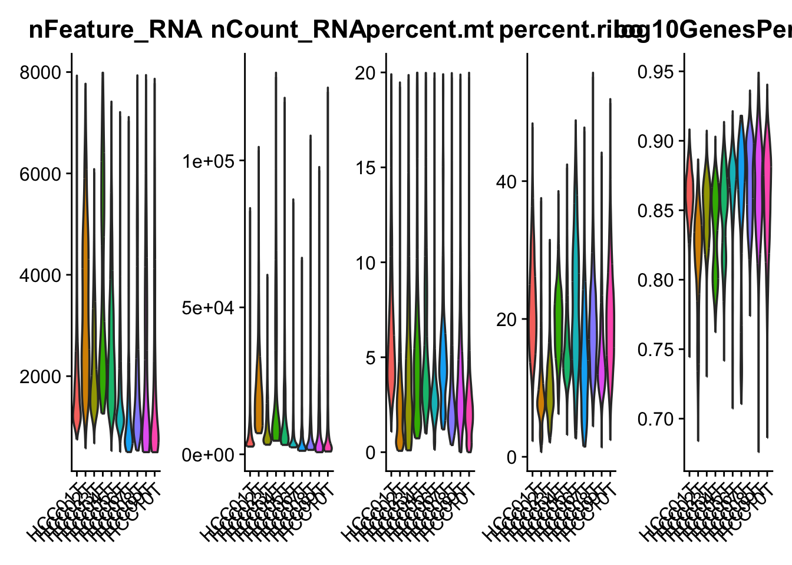
MAD-based adaptive thresholding
# Cells deviating >3 MADs from the median are flagged as outliers.
# Convert to SCE to use scuttle's QC infrastructure
sce <- as.SingleCellExperiment(sc_data)Warning: Layer 'data' is emptyWarning: Layer 'scale.data' is empty# Compute per-cell QC metrics with mitochondrial and ribosomal subsets
cell_qc <- perCellQCMetrics(
sce,
subsets = list(
Mito = grep("^MT-", rownames(sce), value = FALSE),
Ribo = grep("^RP[SL]", rownames(sce), value = FALSE)
)
)
adaptive_filters <- quickPerCellQC(
cell_qc,
percent_subsets = "subsets_Mito_percent",
nmads = 3
)
# Inspect how many cells each filter removes independently
print(colSums(as.matrix(adaptive_filters))) low_lib_size low_n_features high_subsets_Mito_percent
0 0 2671
discard
2671 Apply a hard floor as a safety net
hard_filter <- with(sc_data@meta.data,
nFeature_RNA > 300 &
nFeature_RNA < 5000 &
nCount_RNA > 500 &
nCount_RNA < 30000 &
percent.mt < 30 &
log10GenesPerUMI > 0.80
)
cells_pass <- !adaptive_filters$discard & hard_filter
cat("Cells before filtering:", ncol(sc_data), "\n")Cells before filtering: 34414 cat("Cells passing QC: ", sum(cells_pass), "\n")Cells passing QC: 26964 cat("Cells removed: ", sum(!cells_pass), "\n")Cells removed: 7450 sc_data_filtered <- sc_data[, cells_pass]gene-level filtering on the clean cell set
gene_cell_counts <- rowSums(GetAssayData(sc_data_filtered, layer = "counts") > 0)
genes_keep <- gene_cell_counts >= 10
cat("\nGenes before gene filtering:", nrow(sc_data_filtered), "\n")
Genes before gene filtering: 25479 cat("Genes retained (>=10 cells):", sum(genes_keep), "\n")Genes retained (>=10 cells): 21195 sc_data_clean <- sc_data_filtered[genes_keep, ]Post-filtering QC check
post_filter_violin <- VlnPlot(
sc_data_clean,
features = qc_features,
pt.size = 0,
ncol = 5
) & theme(axis.title.x = element_blank(),
plot.title = element_text(size=10),
axis.text.x = element_text(size=8))Warning: Default search for "data" layer in "RNA" assay yielded no results;
utilizing "counts" layer instead.print(post_filter_violin)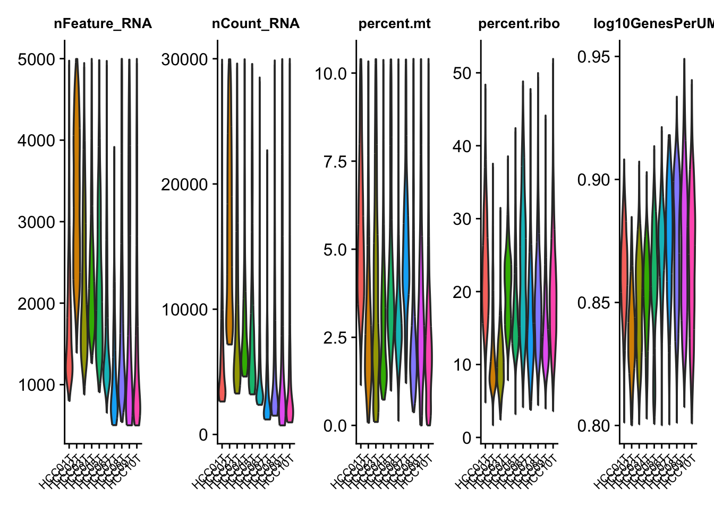
# Print a clean summary
cat("\n──── Final object summary ────\n")
──── Final object summary ────cat("Cells: ", ncol(sc_data_clean), "\n")Cells: 26964 cat("Genes: ", nrow(sc_data_clean), "\n")Genes: 21195 cat("Metadata:", paste(colnames(sc_data_clean@meta.data), collapse = ", "), "\n")Metadata: orig.ident, nCount_RNA, nFeature_RNA, Cell, sample, res.3, site, patient, stage, virus, celltype, percent.mt, percent.ribo, log10GenesPerUMI Normalize data
sc_normalize <- NormalizeData(sc_data_clean,
normalization.method = "LogNormalize")Normalizing layer: countssc_normalize <- FindVariableFeatures(sc_normalize,
selection.method = "vst",
nfeatures = 2000)Finding variable features for layer countstop10 <- head(VariableFeatures(sc_normalize), 10)
plot1 <- VariableFeaturePlot(sc_normalize)
plot2 <- LabelPoints(plot = plot1,
points = top10,
repel = TRUE,
xnudge = 0,
ynudge = 0) +
theme(legend.position = "top") +
labs(title = "Top 2000 Variable Features")
plot2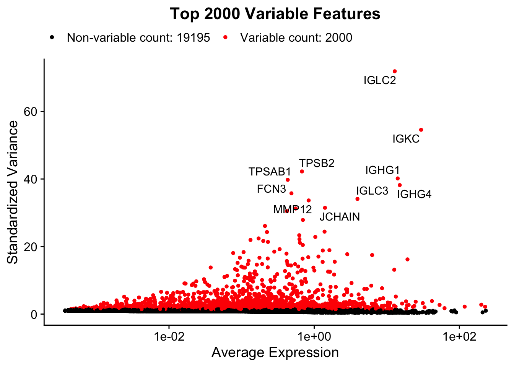
dimension reduction
sc_normalize <- ScaleData(sc_normalize,
features = VariableFeatures(sc_normalize))Centering and scaling data matrixsc_normalize <- RunPCA(sc_normalize,
features = VariableFeatures(sc_normalize), verbose = FALSE)
viz_pca <- VizDimLoadings(sc_normalize, dims = 1:2, reduction = "pca")
pca_plot <- DimPlot(sc_normalize, reduction = "pca", group.by = "orig.ident") +
labs(title = "PCA Reduction")
elbow_plot <- ElbowPlot(sc_normalize, ndims = 50) +
labs(title = "Elbow Plot: Selection of PCs")
pca_plot|elbow_plot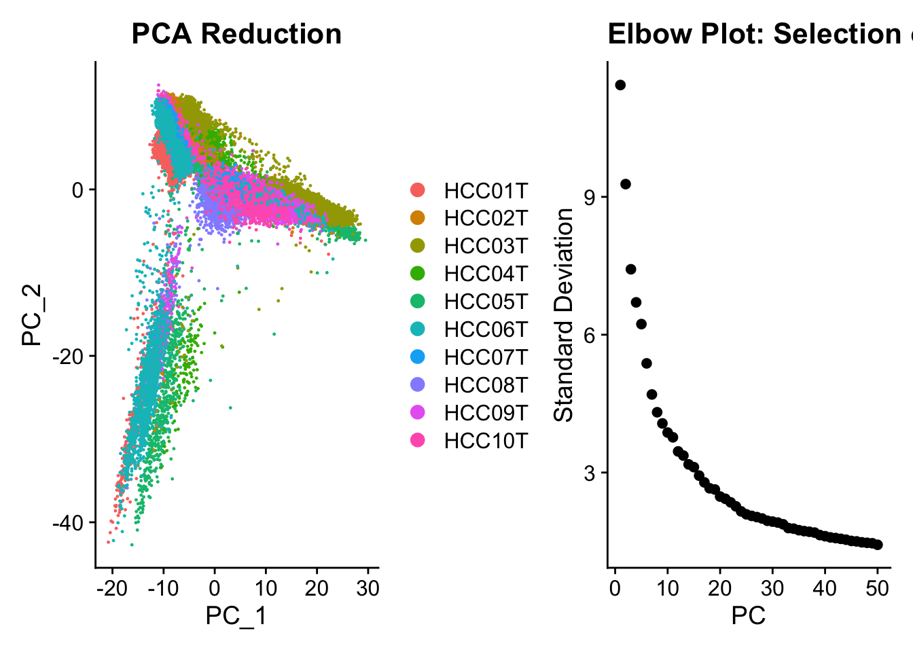
pc_num <- 15
sc_normalize <- FindNeighbors(sc_normalize, dims = 1:pc_num)Computing nearest neighbor graphComputing SNNsc_normalize <- FindClusters(sc_normalize, resolution = 0.4)Modularity Optimizer version 1.3.0 by Ludo Waltman and Nees Jan van Eck
Number of nodes: 26964
Number of edges: 956841
Running Louvain algorithm...
Maximum modularity in 10 random starts: 0.9756
Number of communities: 30
Elapsed time: 2 secondssc_normalize <- RunUMAP(sc_normalize, dims = 1:pc_num)Warning: The default method for RunUMAP has changed from calling Python UMAP via reticulate to the R-native UWOT using the cosine metric
To use Python UMAP via reticulate, set umap.method to 'umap-learn' and metric to 'correlation'
This message will be shown once per session17:52:25 UMAP embedding parameters a = 0.9922 b = 1.11217:52:25 Read 26964 rows and found 15 numeric columns17:52:25 Using Annoy for neighbor search, n_neighbors = 3017:52:25 Building Annoy index with metric = cosine, n_trees = 500% 10 20 30 40 50 60 70 80 90 100%[----|----|----|----|----|----|----|----|----|----|**************************************************|
17:52:27 Writing NN index file to temp file /var/folders/s6/wt2j_st11m30h9lsrd_ptx1w0000gn/T//RtmpAHtQj9/file7d6b291fee1e
17:52:27 Searching Annoy index using 1 thread, search_k = 3000
17:52:32 Annoy recall = 100%
17:52:33 Commencing smooth kNN distance calibration using 1 thread with target n_neighbors = 30
17:52:34 Initializing from normalized Laplacian + noise (using RSpectra)
17:52:36 Commencing optimization for 200 epochs, with 1128378 positive edges
17:52:36 Using rng type: pcg
17:52:43 Optimization finishedDimPlot(sc_normalize, reduction = "umap", label = TRUE)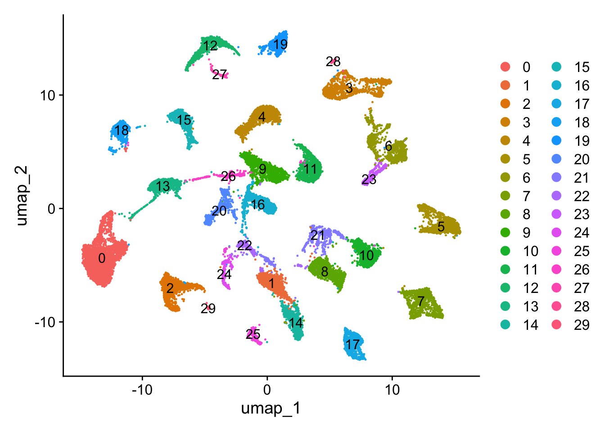
cell type annotation based on scType program which have well-annotated HCC information
# source("https://raw.githubusercontent.com/IanevskiAleksandr/sc-type/master/R/sctype_wrapper.R")
# sample <- run_sctype(sc_normalize, assay = "RNA", scaled = TRUE, known_tissue_type="Liver",custom_marker_file="https://raw.githubusercontent.com/IanevskiAleksandr/sc-type/master/ScTypeDB_short.xlsx",name="sctype_classification")
# sample <- subset(sample,sctype_classification != "Unknown")
sample <- readRDS(file = "./filtered_seuobj.rds")
DimPlot(sample, reduction = "umap",
group.by = "sctype_classification",
label = TRUE,label.size = 3)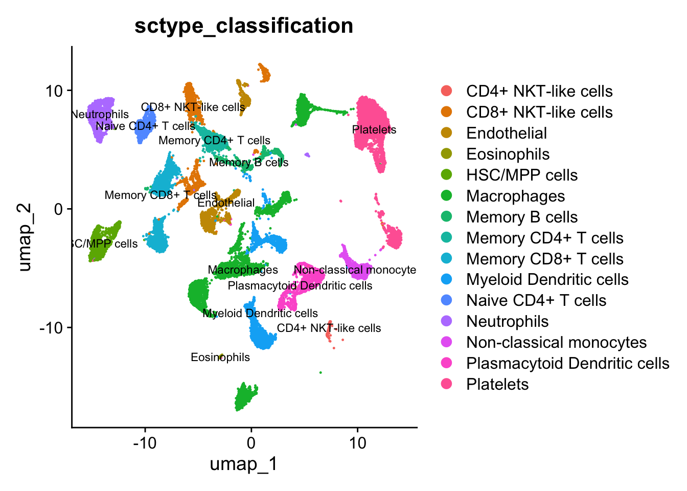
Idents(sample) <- "sctype_classification"
# sc_markers <- FindAllMarkers(sample,
# only.pos = TRUE,
# min.pct = 0.1,
# logfc.threshold = 0.25)
#saveRDS(sc_markers,file="cellType_markers.rds")
sc_markers <- readRDS("cellType_markers.rds")
top3_markers <- sc_markers %>%
group_by(cluster) %>%
top_n(n = 3, wt = avg_log2FC)
DotPlot(sample,features = top3_markers$gene,group.by = "sctype_classification")+
theme(axis.text.x = element_text(angle=90,hjust=1))+
coord_flip()+
theme(axis.text=element_text(size=9))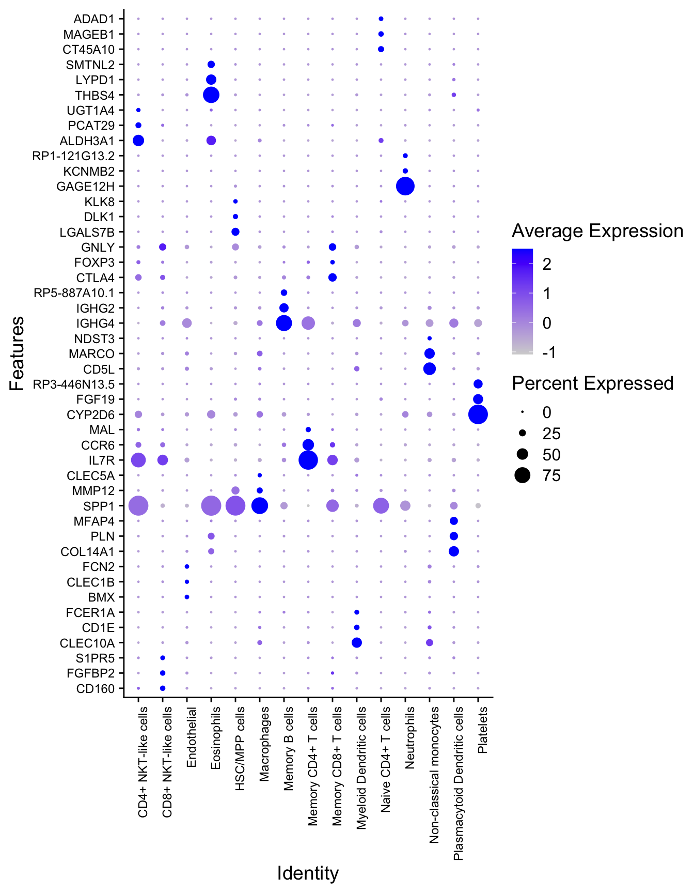
process bulk RNA-seq data
## to convert ENSEMBL ID to gene symbol
TCGA_FPKM<- read.table("TCGA-LIHC.star_fpkm.tsv.gz",
stringsAsFactors = T,row.names = 1,header=T)
colnames(TCGA_FPKM) <- str_replace_all(colnames(TCGA_FPKM),"\\.","-")
ensembl_ids <- rownames(TCGA_FPKM)
clean_ids <- gsub("\\..*", "", ensembl_ids)
id_map <- bitr(clean_ids,
fromType = "ENSEMBL",
toType = "SYMBOL",
OrgDb = org.Hs.eg.db)'select()' returned 1:many mapping between keys and columnsWarning in bitr(clean_ids, fromType = "ENSEMBL", toType = "SYMBOL", OrgDb =
org.Hs.eg.db): 39.38% of input gene IDs are fail to map...TCGA_df <- as.data.frame(TCGA_FPKM)
TCGA_df$ENSEMBL <- clean_ids
TCGA_final <- TCGA_df %>%
inner_join(id_map,by="ENSEMBL") %>%
dplyr::select(-ENSEMBL) %>%
group_by(SYMBOL) %>%
summarise(across(everything(), mean)) %>%
ungroup()Warning in inner_join(., id_map, by = "ENSEMBL"): Detected an unexpected many-to-many relationship between `x` and `y`.
ℹ Row 68 of `x` matches multiple rows in `y`.
ℹ Row 23 of `y` matches multiple rows in `x`.
ℹ If a many-to-many relationship is expected, set `relationship =
"many-to-many"` to silence this warning.TCGA_final <- as.data.frame(TCGA_final)
rownames(TCGA_final) <- TCGA_final$SYMBOL
TCGA_final <- TCGA_final[, -1]
saveRDS(TCGA_final,"TCGA_fpkm_symbol.rds")
raw_clinic_info <- read.table("TCGA-LIHC.clinical.tsv.gz",
header=T,sep="\t",quote="\"")
coldata <- data.frame(row.names=raw_clinic_info$sample,
condition=raw_clinic_info$sample_type.samples) %>%
mutate(condition=factor(condition,
levels=c("Primary Tumor","Solid Tissue Normal"),
labels=c("Tumor","Control")))cell type deconvolution based on BisqueRNA
# library(BisqueRNA)
# bulk.eset <- Biobase::ExpressionSet(assayData = as.matrix(TCGA_final))
# sc.eset <- BisqueRNA::SeuratToExpressionSet(sample, delimiter="_", position=1, version="v3")
# res <- BisqueRNA::ReferenceBasedDecomposition(bulk.eset, sc.eset, markers=NULL, use.overlap=FALSE)
# ref.based.estimates <- res$bulk.props
# saveRDS(ref.based.estimates,file="ref.based.estimates.rds")
ref.based.estimates <- readRDS("ref.based.estimates.rds")
ref.based.estimates[1:6,1:6] TCGA-5R-AA1C-01A TCGA-ED-A66Y-01A TCGA-DD-AAEI-01A
CD8+ NKT-like cells 0.0000000 0.00000000 0.00000000
Myeloid Dendritic cells 0.0000000 0.02983325 0.00000000
Endothelial 0.0000000 0.00000000 0.00000000
Plasmacytoid Dendritic cells 0.0000000 0.37354187 0.00000000
Macrophages 0.3935501 0.05344098 0.57259313
Memory CD4+ T cells 0.0000000 0.12716608 0.05386636
TCGA-ED-A8O5-01A TCGA-DD-A3A2-11A TCGA-DD-AACH-01A
CD8+ NKT-like cells 0.00000000 0.0000000 0.00000000
Myeloid Dendritic cells 0.20606695 0.0000000 0.41952190
Endothelial 0.06778911 0.0000000 0.03386005
Plasmacytoid Dendritic cells 0.05783417 0.0000000 0.22213000
Macrophages 0.00000000 0.2068835 0.00000000
Memory CD4+ T cells 0.20487113 0.0000000 0.00000000implement comparison of cell proportion between tumor and control samples
long_data <- ref.based.estimates %>%
t() %>%
as.data.frame() %>%
mutate(sample=row.names(.)) %>%
pivot_longer(cols=1:15) %>%
mutate(group=coldata[sample,]) %>%
filter(!is.na(group))
long_data %>%
mutate(group=factor(group,levels=c("Control","Tumor"))) %>%
ggplot(aes(x=group,y=value,color=group))+
geom_boxplot(fill="NA")+
facet_wrap(.~name,ncol = 5,scales = "free")+
stat_compare_means(label = "p.signif",label.y.npc = 0.85)+
scale_color_manual(values = c("steelblue","orange"))+
theme_bw()+
theme(legend.position = "NA",
strip.text = element_text(size=7),
strip.background = element_blank())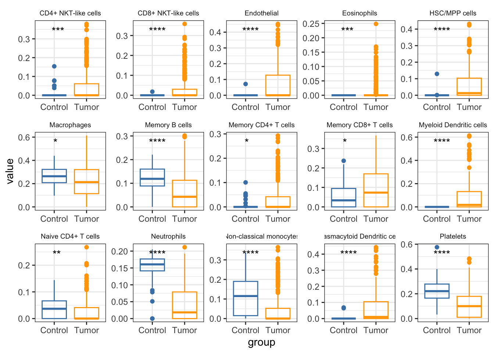
This result shows that all cell types are differently proportioned between tumor and control samples.
cell proportion across all samples exhibition
my_colors <- colorRampPalette(brewer.pal(12, "Paired"))(22)
long_data <- long_data %>% arrange(group,name) %>%
mutate(group=factor(group,levels=c("Control","Tumor")),sample=factor(sample,levels=unique(sample)))
p_anno <- ggplot(long_data, aes(x = sample, y = 1, fill = group)) +
geom_tile() +
scale_fill_manual(values=c("#4DBBD5FF","#E64B35FF")) +
theme_void() +
theme(legend.position = "top") +
labs(fill = "Group")
p_bar <- ggplot(long_data, aes(x = sample, y = value, fill = name)) +
geom_bar(stat = "identity", width = 1) +
scale_fill_manual(values = my_colors) +
scale_y_continuous(expand = c(0, 0)) +
theme_classic() +
theme(
axis.text.x = element_blank(),
axis.ticks.x = element_blank(),
legend.position = "bottom"
) +
labs(y = "Cell Proportion", fill = "Cell Type")
p <- p_anno / p_bar + plot_layout(heights = c(1, 10))
p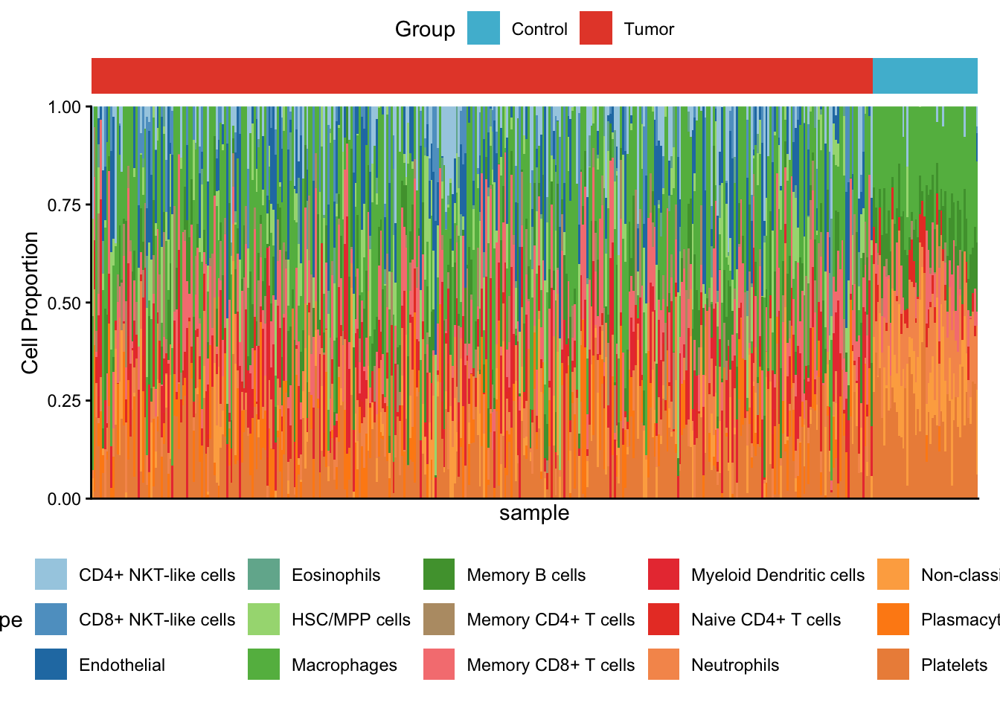
The barplot shows that the proportion of cells are different between control and tumor samples, for instance, the macrophages take higher proportion in control samples.
cell type proportion correlation
cor_res <- ref.based.estimates %>%
t() %>%
as.data.frame() %>%
corr.test(method = "pearson")
cor_matrix <- cor_res$r
p_matrix <- cor_res$p
corrplot(cor_matrix,
method = "color",
type = "upper",
order = "hclust",
p.mat = p_matrix,
sig.level = 0.05,
insig = "label_sig",
tl.col = "black",
tl.srt = 45,
tl.cex = 0.7,
cl.cex = 0.7,
pch.cex = 0.8,
col = colorRampPalette(c("#4477AA", "#77AADD", "#FFFFFF", "#EE9988", "#BB4444"))(200))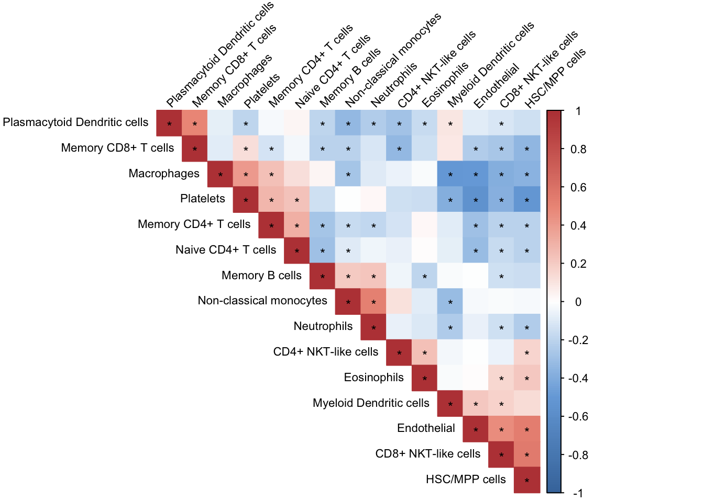
exploring the cell proportion change along stage evolution
stage_anno <- raw_clinic_info %>%
dplyr::select(sample,ajcc_pathologic_stage.diagnoses) %>%
mutate(ajcc_pathologic_stage.diagnoses= case_when(ajcc_pathologic_stage.diagnoses %in% c("Stage IIIA","Stage IIIB","Stage IIIC") ~ "Stage III",
ajcc_pathologic_stage.diagnoses %in% c("Stage IVA","Stage IVB") ~ "Stage IV",
.default = ajcc_pathologic_stage.diagnoses)) %>%
filter(ajcc_pathologic_stage.diagnoses != "") %>%
column_to_rownames(var="sample")
plot_data2 <- long_data
plot_data2$stage <- stage_anno[plot_data2$sample,]
plot_data2$stage <- factor(plot_data2$stage,levels = c("Stage I","Stage II","Stage III","Stage IV"))
plot_data2 <- plot_data2 %>% filter(group == "Tumor",!is.na(stage), stage != "")
plot_data2 <- plot_data2 %>%
mutate(stage_num = as.numeric(stage)) # Stage I -> 1, Stage II -> 2 ...
my_colors <- colorRampPalette(brewer.pal(12, "Paired"))(15)
p <- ggplot(plot_data2, aes(x = stage_num, y = value, color = name)) +
geom_boxplot(aes(group = interaction(stage, name), fill = name), color = "black") +
geom_smooth(method = "gam", formula = y ~ s(x, k = 3), se = FALSE, size = 1) +
scale_color_manual(values=my_colors) +
scale_fill_manual(values=my_colors) +
scale_x_continuous(breaks = 1:4, labels = c("Stage I", "Stage II", "Stage III", "Stage IV")) +
labs(x="",y="cell proportion")+
theme_bw()+
theme(
axis.text = element_text(size = 8, color="black"),
plot.title = element_text(size = 10, hjust = 0.5, face = "bold"),
legend.text = element_text(size = 7),
legend.position = "right"
)Warning: Using `size` aesthetic for lines was deprecated in ggplot2 3.4.0.
ℹ Please use `linewidth` instead.p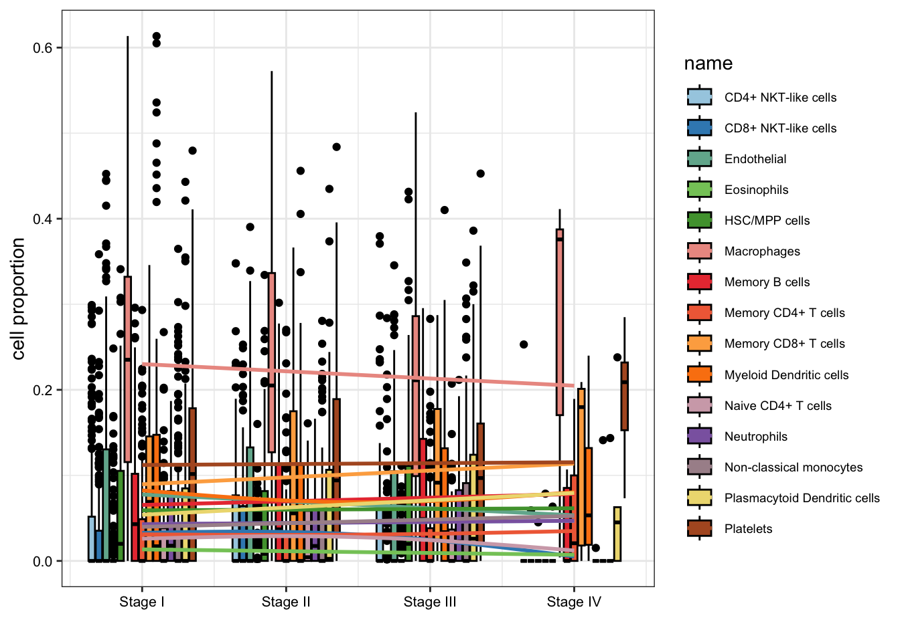
There are certain patterns of cell proportion change along tumor progression, for instance, macrophages tends to take less proportion in the early stage of tumor progression in stage II and III, but starting to rise in stage IV. However, platelets decreases along the progression stages.
process the raw counts of bulk RNA-seq data and perform DEG analysis
raw_counts <- read.table("TCGA-LIHC.star_counts.tsv.gz",
stringsAsFactors = F,header=T,row.names=1)
colnames(raw_counts) <- str_replace_all(colnames(raw_counts),pattern = "\\.",replacement = "-")
coldata <- coldata %>% filter(!is.na(condition))
common_sample <- intersect(colnames(raw_counts),row.names(coldata))
raw_counts <- raw_counts[,common_sample]
coldata_new <- coldata[common_sample,]
coldata_new <- data.frame(row.names = common_sample,condition=coldata_new)
clean_ids <- gsub("\\..*", "", rownames(raw_counts))
gene_map <- bitr(clean_ids,
fromType = "ENSEMBL",
toType = "SYMBOL",
OrgDb = org.Hs.eg.db)'select()' returned 1:many mapping between keys and columnsWarning in bitr(clean_ids, fromType = "ENSEMBL", toType = "SYMBOL", OrgDb =
org.Hs.eg.db): 39.38% of input gene IDs are fail to map...keep_indices <- which(clean_ids %in% gene_map$ENSEMBL)
raw_counts_filtered <- raw_counts[keep_indices, ]
final_clean_ids <- gsub("\\..*", "", rownames(raw_counts_filtered))
final_map <- gene_map[match(final_clean_ids, gene_map$ENSEMBL), ]
final_symbols <- make.unique(final_map$SYMBOL)
rownames(raw_counts_filtered) <- final_symbols
raw_counts_filtered <- raw_counts_filtered^2 -1
raw_counts_filtered[raw_counts_filtered<0] <- 0
write.csv(raw_counts_filtered,"raw_count_symbol.csv")
dds <- DESeqDataSetFromMatrix(countData = round(raw_counts_filtered,0),
colData = coldata_new,
design = ~ condition)converting counts to integer mode it appears that the last variable in the design formula, 'condition',
has a factor level, 'Control', which is not the reference level. we recommend
to use factor(...,levels=...) or relevel() to set this as the reference level
before proceeding. for more information, please see the 'Note on factor levels'
in vignette('DESeq2').dds <- DESeq(dds)estimating size factorsestimating dispersionsgene-wise dispersion estimatesmean-dispersion relationship-- note: fitType='parametric', but the dispersion trend was not well captured by the
function: y = a/x + b, and a local regression fit was automatically substituted.
specify fitType='local' or 'mean' to avoid this message next time.final dispersion estimatesfitting model and testing-- replacing outliers and refitting for 746 genes
-- DESeq argument 'minReplicatesForReplace' = 7
-- original counts are preserved in counts(dds)estimating dispersionsfitting model and testingsaveRDS(dds,"dds.rds")
res <- results(dds, contrast = c("condition", "Tumor", "Control"))
FDR_THRESHOLD <- 0.05
LFC_THRESHOLD <- 1
# Volcano Plot
generate_volcano_plot <- function(results_df, title) {
plot_df <- results_df %>%
filter(!is.na(pvalue)) %>%
rownames_to_column(var = "Gene_Symbol") %>%
mutate(
Significant = case_when(pvalue < FDR_THRESHOLD & log2FoldChange >= LFC_THRESHOLD ~ "Up-regulated",
pvalue < FDR_THRESHOLD & log2FoldChange <= -LFC_THRESHOLD ~ "Down-regulated",
TRUE ~ "Not significant"),
log10_pvalue = -log10(pvalue+0.00000001)
)
# 找到数据中最大的有限数值
max_finite <- max(plot_df$log10_pvalue[is.finite(plot_df$log10_pvalue)], na.rm = TRUE)
plot_df <- plot_df %>%
mutate(log10_pvalue = ifelse(is.infinite(log10_pvalue), max_finite * 1.05, log10_pvalue))
top10_up <- plot_df %>%
filter(Significant == "Up-regulated") %>%
arrange(desc(log2FoldChange)) %>%
head(10)
top10_down <- plot_df %>%
filter(Significant == "Down-regulated") %>%
arrange(log2FoldChange) %>% head(10)
top_genes_label <- bind_rows(top10_up, top10_down)
p <- ggplot(plot_df, aes(x = log2FoldChange, y = log10_pvalue, color = Significant)) +
geom_point(alpha = 0.5, size = 1.5) +
scale_color_manual(values = c("Up-regulated" = "red", "Down-regulated" = "blue", "Not significant" = "grey50")) +
geom_hline(yintercept = -log10(FDR_THRESHOLD), linetype = "dashed", color = "black", alpha = 0.5) +
geom_vline(xintercept = c(-LFC_THRESHOLD, LFC_THRESHOLD), linetype = "dashed", color = "black", alpha = 0.5) +
geom_text_repel(data = top_genes_label, aes(label = Gene_Symbol),
size = 3, box.padding = unit(0.5, "lines"),
point.padding = unit(0.5, "lines"), max.overlaps = 30) +
labs(title = paste0( "Volcano Plot: ", title), x = expression(Log[2]~"Fold Change"), y = expression(-Log[10]~"P-value")) +
scale_y_continuous(limits = c(0,1.2 * max(plot_df$log10_pvalue)))+
theme_minimal(base_size = 14) +
theme(legend.position = "bottom",
plot.title = element_text(hjust = 0.5, face = "bold"))
return(p)
}
generate_volcano_plot(as.data.frame(res), "Tumor vs. Normal" )Warning: Removed 12 rows containing missing values or values outside the scale range
(`geom_point()`).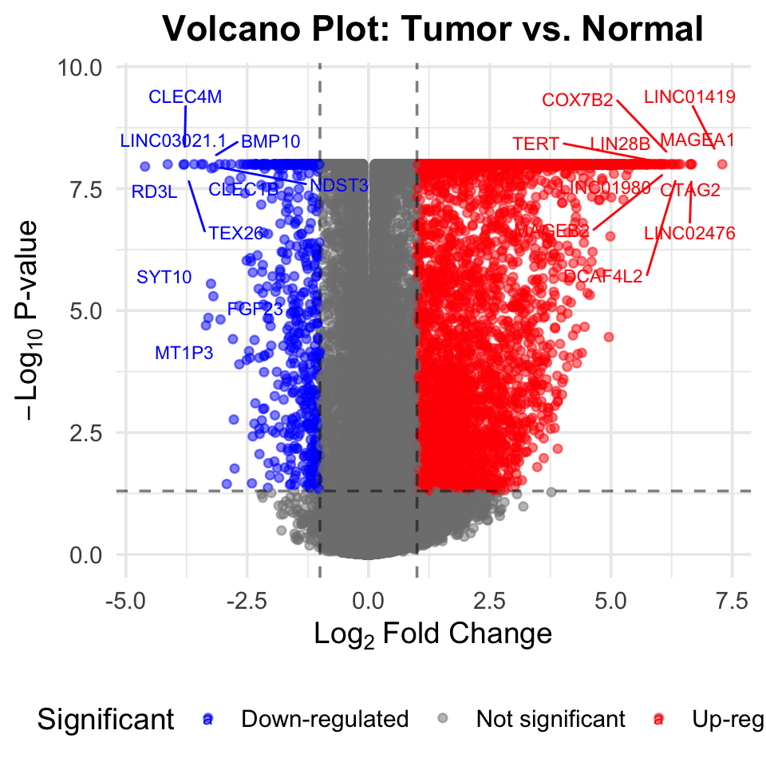
gene enrichment analysis
# Create a named list of cell-type gene sets from sc markers
sc_markers_new <- sc_markers %>%
filter(p_val_adj<0.05,avg_log2FC>0.5)
cell_type_genesets <- split(sc_markers_new$gene, sc_markers_new$cluster)
bulk_ranked <- res$log2FoldChange
names(bulk_ranked) <- rownames(res)
bulk_ranked <- sort(bulk_ranked, decreasing = TRUE)
# Run GSEA
gsea_result <- GSEA(
geneList = bulk_ranked,
TERM2GENE = stack(cell_type_genesets)[, c("ind", "values")],
pvalueCutoff = 0.05,
verbose = FALSE
)Warning in preparePathwaysAndStats(pathways, stats, minSize, maxSize, gseaParam, : There are ties in the preranked stats (10.43% of the list).
The order of those tied genes will be arbitrary, which may produce unexpected results.no term enriched under specific pvalueCutoff...